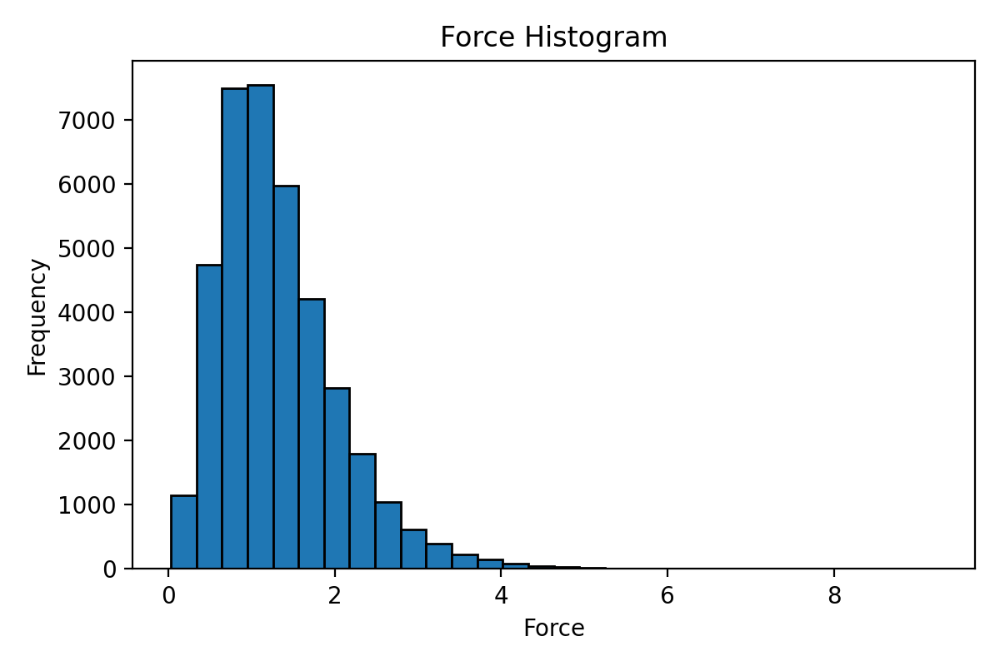

功能简介
本模块用于检查、过滤和验证结构数据集，包括成分和性质范围分析、短距离接触检测、条件过滤、NEP 训练数据异常检测，以及剩余模拟时间估算。
准备工作
脚本位置： Scripts/analyzer/
确保已安装 GPUMDkit。安装说明请参见快速入门。
概览
| 任务 | 命令 | 用途 |
|---|---|---|
| 成分分析 | gpumdkit.sh -analyze_comp train.xyz |
按化学成分分组 |
| 化学物种 | gpumdkit.sh -chem_species train.xyz |
列出文件中的元素 |
| 性质范围 | gpumdkit.sh -range train.xyz force |
检查能量/力/virial 范围 |
| 能量参考平移 | gpumdkit.sh -shift_energy |
交互式平移 extxyz 能量参考 |
| 最短距离 | gpumdkit.sh -min_dist dump.xyz |
快速距离检查（无 PBC） |
| 最短距离（PBC） | gpumdkit.sh -min_dist_pbc dump.xyz |
考虑周期边界的距离检查 |
| 电荷平衡 | gpumdkit.sh -cbc train.xyz |
氧化态平衡检查 |
| 距离过滤 | gpumdkit.sh -filter_dist_pbc dump.xyz 1.0 |
移除短距离接触的结构 |
| 盒子过滤 | gpumdkit.sh -filter_box dump.xyz 13 |
移除盒子过大的结构 |
| 性质过滤 | gpumdkit.sh -filter_value train.xyz force 20 |
按能量/力/virial 阈值过滤 |
| 对距离范围 | gpumdkit.sh -filter_range dump.xyz Li Li 1.8 2.0 |
按对距离提取结构 |
| 异常检测 | 菜单 502 | 查找训练集中高 RMSE 的结构 |
| 概率密度 | gpumdkit.sh -pda <参考结构> <轨迹> <元素> <网格间距> |
用于扩散通道分析的 3D 概率密度 |
| GPUMD 时间 | gpumdkit.sh -time gpumd |
估算 GPUMD 剩余运行时间 |
| WPE GPUMD 时间 | gpumdkit.sh -time wpe |
估算启用 WPE 的 GPUMD 剩余运行时间 |
| NEP 时间 | gpumdkit.sh -time nep |
估算 NEP 剩余训练时间 |
先检查，再过滤
运行 -filter_* 之前，先用 -min_dist_pbc 或 -range 等命令检查，这样能看到结构会被剔除的原因。周期性晶胞请使用考虑 PBC 的距离检查，不考虑 PBC 的版本只适合快速对照。下文示例中的数值只用于说明命令格式，距离、盒长和力的阈值请根据自己的体系和数据确定。
---|---|---|
| 是否需要考虑周期性镜像？ | gpumdkit.sh -min_dist_pbc <input.xyz> | 周期性晶胞应使用考虑 PBC 的路线；不考虑 PBC 的路线只适合快速对照。 |
| 某个值是否异常偏大或偏小？ | gpumdkit.sh -range <input.xyz> energy\|force\|virial | 合理范围取决于目标体系和参考数据。 |
| 原子接触是否过短？ | gpumdkit.sh -min_dist_pbc <input.xyz> | 距离阈值应由体系化学和数据用途决定。 |
| 应移除哪些结构？ | 先检查结果，再运行 -filter_* | 过滤阈值不是通用默认值。 |
下文示例中的数值仅用于展示命令格式。不要把示例里的距离、盒长或力阈值当成另一种材料或流程的推荐值。
能量参考平移
align_energy_reference.py 提供 Python 交互页面，用于平移多帧 extxyz
文件中的 energy= 值。输出时会保留原子行和其他 header 字段。
直接进入交互页面：
gpumdkit.sh -shift_energy也可以打开 GPUMDkit，选择 5) Analyzer -> 509。页面会先显示检测到的
元素和 config_type 分组，然后提供三种模式：
- 参考组对齐：将选定分组对齐到参考组的平均能量。
- 零原子基线对齐：为每个分组优化原子能量基线，使平移后的能量目标为零。
- DFT 到 NEP 对齐：计算 NEP 能量，并将原始 DFT 能量对齐到 NEP 能量。
模式 1 和 2 使用自然进化策略（NES）优化器拟合基准值，默认设置适用于大多数
数据集；如有需要，可以在交互界面中修改高级设置。DFT 到 NEP 模式需要 calorine 和兼容的 NEP 模型文件。
完整示例
下面的命令在一个小型示意文件 train.xyz 上运行：9 帧含 16 个 Li 原子的晶胞，其中 3 帧把 4 个 Li 换成了 F，另有 1 帧中有两个原子仅相距 0.4 Å（典型的失败 MD 步产生的“坏”结构）。这些数字只属于这个示例文件，并非真实数据集。
1. 文件里有什么？
gpumdkit.sh -analyze_comp train.xyz Index Compositions N atoms Count
---------------------------------------------------
1 Li16 16 6
2 Li12F4 16 3
---------------------------------------------------
Enter index to export (e.g., '1,2', '2-3', 'all'), or press Enter to skip:表格统计每种成分对应的帧数。最后一行是交互提示：输入序号（如 2）会把该成分的帧写入文件，直接按 Enter 则不修改任何文件。
2. 标签的范围多大？
gpumdkit.sh -range train.xyz energy
gpumdkit.sh -range train.xyz force Energy range: -30.400 to -25.400
Force range: 0.199 to 3.254其他结构的能量都在 -30.4 eV 附近，而出现了 -25.4 eV，这是一个信号；最大力 3.25 eV/Å 也是。它们本身都不一定是错误，需要去看对应的结构。
3. 有没有原子靠得太近？
gpumdkit.sh -min_dist_pbc train.xyz Minimum interatomic distances (with PBC):
+---------------------------+
| Atom Pair | Distance (Å) |
+---------------------------+
| Li-Li | 0.400 |
| Li-F | 2.447 |
| F-F | 2.776 |
+---------------------------+
Overall min_distance: 0.400 ÅLi-Li 距离 0.4 Å 远小于任何合理的键长，说明某一帧中存在重叠的原子。
4. 剔除它们，并保留被剔除结构的记录。
gpumdkit.sh -filter_dist_pbc train.xyz 1.5 Total structures processed: 9
Structures filtered out: 1
Structures retained: 8
Filtered structures saved to: filtered_train.xyz
Filtered-out structures saved to: filtered_out_train.xyz阈值 1.5 仅为示例，请根据你自己体系中的元素选择。在彻底丢弃之前，请先查看 filtered_out_train.xyz。
5. 检查结果。
gpumdkit.sh -min_dist_pbc filtered_train.xyz清理后的文件在进入训练集之前，请再运行一遍同样的检查。
交互模式
运行 gpumdkit.sh 并选择 5) Analyzer。大部分功能也有命令行快捷方式，见概览表和下文各节。
显示完整菜单
+------------------------------------------------------+
| ANALYZER TOOLS |
+------------------------------------------------------+
| 501) Analyze composition of extxyz |
| 502) Find outliers of extxyz |
| 503) Analyze chemical species of extxyz |
| 504) Check charge balance of extxyz |
| 505) Analyze energy/force/virial range |
| 506) Filter structures by minimum distance |
| 507) Get minimum interatomic distance |
| 508) Probability density analysis |
| 509) Shift energy reference interactively |
+------------------------------------------------------+
| 000) Return to the main menu |
+------------------------------------------------------+
Input the function number:成分分析
analyze_composition.py 分析 extxyz 文件的成分，并允许导出子集。
功能： 按化学成分对结构分组，并显示每种成分的结构数量。可以按成分导出子集。
命令行模式：
gpumdkit.sh -analyze_comp train.xyz交互模式： 在分析工具菜单中选择 501。
输出示例：
Index Compositions N atoms Count
---------------------------------------------------
1 Li56O96Zr16La24 192 51
---------------------------------------------------
Enter index to export (e.g., '1,2', '2-3', 'all'), or press Enter to skip:当 train.xyz 包含不同体系或不同尺寸的结构时很有用。可以从交互提示中按成分导出子集。
化学物种
analyze_chem_species.py 列出 extxyz 文件中所有唯一的化学物种。
输入文件： train.xyz（extxyz 格式）
gpumdkit.sh -chem_species train.xyz性质范围分析
energy_force_virial_analyzer.py 计算并可视化 extxyz 文件中性质的范围。
输入文件： train.xyz（extxyz 格式）
支持的性质： energy、force、virial
gpumdkit.sh -range train.xyz force
gpumdkit.sh -range train.xyz energy
gpumdkit.sh -range train.xyz virial
gpumdkit.sh -range train.xyz force hist # 显示直方图输出示例：
Force range: 0.03210566767721861 to 9.230115912468435使用 hist 选项：

最短距离检查
无 PBC（快速）
get_min_dist.py 计算不考虑周期性边界条件的最短原子间距。速度快，但对周期性体系可能不准确。
功能： 汇总所有帧中各元素对的最短距离，忽略周期性边界条件。元素按其在整个数据集中首次出现的顺序收集；某帧中不存在的元素对会跳过。含 PBC 的版本也覆盖整个数据集中的元素对。
命令行模式：
gpumdkit.sh -min_dist dump.xyz交互模式： 在分析工具菜单中选择 507。
输出示例：
+---------------------------+
| PBC ignored for speed |
| use -min_dist_pbc for PBC |
+---------------------------+
Minimum interatomic distances:
+---------------------------+
| Atom Pair | Distance (Å) |
+---------------------------+
| Li-Li | 1.696 |
| Li-O | 1.587 |
| O-O | 2.480 |
+---------------------------+
Overall min_distance: 1.587 Å说明： 用于快速检查。对于周期性体系，建议使用 -min_dist_pbc 获得准确结果。
含 PBC（准确）
get_min_dist_pbc.py 计算考虑周期性边界条件的最短原子间距。
功能： 报告每对元素之间的最短距离，考虑周期性边界条件。
命令行模式：
gpumdkit.sh -min_dist_pbc dump.xyz交互模式： 在分析工具菜单中选择 507，当提示是否考虑 PBC 时输入 y。
输出示例：
Minimum interatomic distances (with PBC):
+---------------------------+
| Atom Pair | Distance (Å) |
+---------------------------+
| Li-Li | 1.696 |
| Li-O | 1.587 |
| O-O | 2.355 |
+---------------------------+
Overall min_distance: 1.587 Å结构过滤
按最短距离过滤
filter_structures_by_distance_pbc.py 移除任何原子间距低于阈值的结构。
输入文件： dump.xyz（extxyz 格式）
gpumdkit.sh -filter_dist_pbc dump.xyz 1.0移除任何原子间距低于 1.0 Å 的结构，其余结构写入 filtered_dump.xyz。
按盒子大小过滤
filter_exyz_by_box.py 按盒子边长过滤结构。
输入文件： dump.xyz（extxyz 格式）
gpumdkit.sh -filter_box dump.xyz 13保留所有盒子边长都不超过 13 Å 的结构，写入 filtered_by_box.xyz。
按性质值过滤
filter_exyz_by_value.py 按能量、力或 virial 阈值过滤结构。
输入文件： train.xyz（extxyz 格式）
支持的性质： energy、force、virial
gpumdkit.sh -filter_value train.xyz force 20
gpumdkit.sh -filter_value train.xyz energy <max_energy>所有值都不超过阈值的结构才会保留：force 比较每个力分量的绝对值（eV/Å），energy 比较文件中存储的总能量（eV，不是每原子能量），virial 比较每个维里分量。没有存储该性质的帧无法检查，会直接保留，脚本会报告其数量。保留的结构写入 filtered.xyz。
按对距离范围过滤
filter_dist_range.py 提取特定元素对距离在给定范围内的结构。
输入文件： dump.xyz（extxyz 格式）
gpumdkit.sh -filter_range dump.xyz Li Li 1.8 2.0提取 Li-Li 最短距离在 1.8 Å 到 2.0 Å 之间的结构。输出：filtered_Li_Li_1.8_2.0.xyz。
电荷平衡检查
charge_balance_check.py 检查结构的氧化态平衡。
输入文件： train.xyz（extxyz 格式）
gpumdkit.sh -cbc train.xyz输出文件：
balanced.xyz— 电荷平衡的结构unbalanced.xyz— 电荷不平衡的结构indices.txt— 平衡结构的索引
适用于具有明确氧化态的体系。
异常检测
find_outliers.py 基于能量、力和应力的 RMSE 阈值查找 NEP 训练数据中的异常结构。
输入文件： energy_train.out、force_train.out、stress_train.out、train.xyz
这些文件在 NEP 训练过程中生成。脚本比较 DFT 与 NEP 的预测，识别误差较大的结构。
含有 -1e6 应力缺失标记，或任一应力分量绝对值超过 1e6 的结构，会在计算 RMSE 前排除，也不会写入两个输出数据集。若没有剩余的有效结构，脚本会报错且不写出结果。
# 交互模式
gpumdkit.sh # 选择：5) 分析工具 → 502) 查找异常结构交互提示：
Enter energy RMSE threshold (meV/atom): 1
Enter force RMSE threshold (meV/Å): 60
Enter stress RMSE threshold (GPa): 0.03输出文件：
selected.xyz— 超过 RMSE 阈值的结构（异常值）remained.xyz— 在阈值内的结构selected_remained.png— 对比图
用途： NEP 训练后，用此工具识别对误差贡献最大的问题结构。移除或改进这些结构以提升训练集质量。
时间估算
GPUMD 剩余时间
time_consuming_gpumd.sh 估算 GPUMD 模拟的剩余时间。
输入文件： run.in、thermo.out（在当前 GPUMD 工作目录中）
gpumdkit.sh -time gpumd输出示例：
----------------- System Information ----------------
total frames: 1050000
-----------------------------------------------------
Current Frame Speed (steps/s) Total Time Time Left Estimated End
------------- ------------- ------------- ------------- -----------------
13000 499.86 0h 35m 0s 0h 34m 34s 2025-12-27 18:12:04
14000 199.93 1h 27m 31s 1h 26m 21s 2025-12-27 19:03:56启用 WPE 的 GPUMD 剩余时间
time_consuming_wpe.sh 使用缓冲后的进度更新，估算启用 WPE 的 GPUMD 运行剩余时间。
输入文件： 当前 GPUMD 工作目录中的 run.in，以及 neighbor.out 或 thermo.out
gpumdkit.sh -time wpeNEP 剩余时间
time_consuming_nep.sh 估算 NEP 训练的剩余时间。
输入文件： loss.out（在当前 NEP 工作目录中）
gpumdkit.sh -time nep输出示例：
+-----------------+-----------+-----------------+---------------------+
| Step | Time Diff | Time Left | Finish Time |
+-----------------+-----------+-----------------+---------------------+
| 6700 | 1 s | 0 h 15 m 33 s | 2025-10-23 15:34:11 |
| 6800 | 2 s | 0 h 31 m 4 s | 2025-10-23 15:49:44 |
| 6900 | 2 s | 0 h 31 m 2 s | 2025-10-23 15:49:44 |
+-----------------+-----------+-----------------+---------------------+概率密度分析
probability_density_analysis.py 计算移动离子的 3D 概率密度，用于扩散通道分析。
输入文件： 参考结构（POSCAR）、轨迹文件（extxyz）
命令行模式：
gpumdkit.sh -pda LLZO.vasp dump.xyz Li 0.25参数说明：
| 参数 | 含义 |
|---|---|
LLZO.vasp |
参考结构（POSCAR 格式） |
dump.xyz |
轨迹文件（extxyz 格式） |
Li |
目标移动离子 |
0.25 |
概率密度网格间距（Å） |
输出： probability_density_0.25.vasp — VASP 格式的概率密度网格，可用 VESTA 等工具可视化。
可视化建议：
- 在 VESTA 中打开
probability_density_0.25.vasp - 使用 "Edit → Data → Volumetric Data" 调整等值面级别
- 按数值对概率密度着色，以突出优选扩散路径
- 叠加晶体结构作为参考
示例工作流
结构质量检查
# 1. 检查成分
gpumdkit.sh -analyze_comp train.xyz
# 2. 检查能量/力范围
gpumdkit.sh -range train.xyz force hist
# 3. 检查最短距离
gpumdkit.sh -min_dist_pbc train.xyz
# 4. 查找异常值（NEP 训练后）
# 交互：5) 分析工具 → 502结构过滤流水线
# 1. 按最短距离过滤（输出 filtered_dump.xyz）
gpumdkit.sh -filter_dist_pbc dump.xyz 1.0
# 2. 按盒子大小过滤（输出 filtered_by_box.xyz）
gpumdkit.sh -filter_box filtered_dump.xyz 13
# 3. 按力阈值过滤（输出 filtered.xyz）
gpumdkit.sh -filter_value filtered_by_box.xyz force 20扩散通道分析
# 1. 计算概率密度
gpumdkit.sh -pda LLZO.vasp dump.xyz Li 0.25
# 2. 用 VESTA 可视化
# 打开 probability_density_0.25.vasp